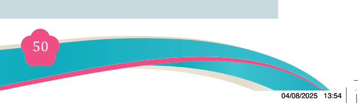
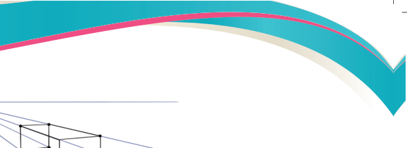
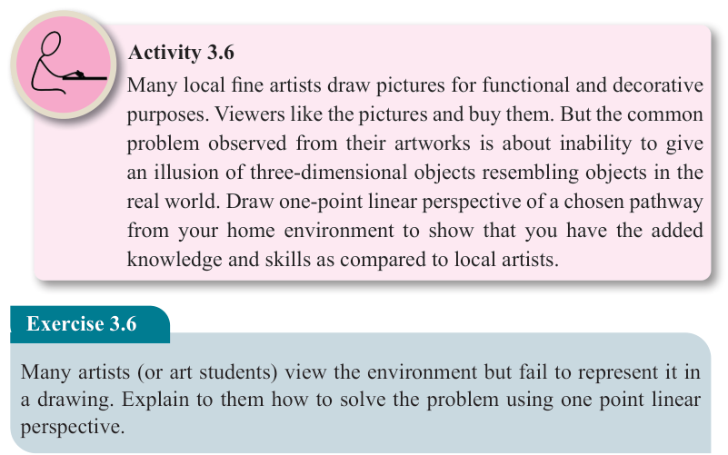
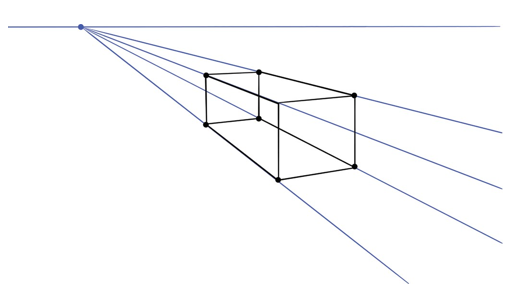
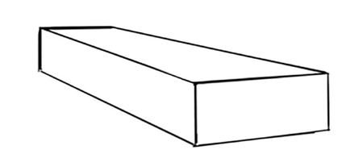
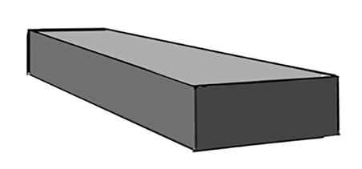

Fine Art for Secondary Schools

50

Student’s Book Form Two


Step 2


(b): Using the orthogonal to draw a box.
Step 3

(c): Rubbed orthogonal lines before starting the shading process
Step 4


(d): Completed work with light and shade
Figure 3.20 (a-d): Steps on how to create one-point linear perspective
Activity 3.6
Many local fine artists draw pictures for functional and decorative purposes. Viewers like the pictures and buy them. But the common problem observed from their artworks is about inability to give an illusion of three-dimensional objects resembling objects in the real world. Draw one-point linear perspective of a chosen pathway from your home environment to show that you have the added knowledge and skills as compared to local artists.
Exercise 3.6
Many artists (or art students) view the environment but fail to represent it in a drawing. Explain to them how to solve the problem using one point linear perspective.
04/08/2025 13:54